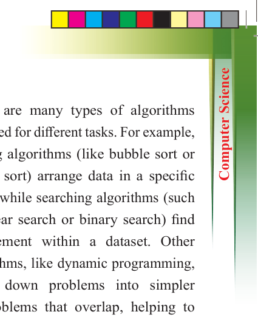
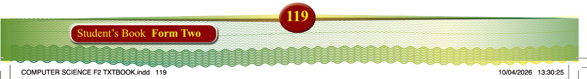

Exercise 3.4
1. With examples, explain the
differences between low-level and high-level programming
languages.
2. Why might a developer choose a
low-level programming language
over a high-level one?
3. How is a procedural programming
language different from object-
oriented programming?
4. What is functional programming,
and how does it differ from
procedural and OOP?
5. How does a scripting language interact with an operating system or web server?
Algorithms in programming
An algorithm in programming is a step-
by-step procedure or formula used to
solve a specific problem. It acts as a set of instructions that guide how to process
input and generate output. Algorithms
are central to all computer programs and
applications, helping to solve problems
in a structured and efficient way. The key
characteristics of an algorithm include
having a defined input, producing a defined output, being finite (it must
eventually stop), and being definite (each
step is clearly specified).
There are many types of algorithms
designed for different tasks. For example,
sorting algorithms (like bubble sort or merge sort) arrange data in a specific
order, while searching algorithms (such
as linear search or binary search) find an element within a dataset. Other
algorithms, like dynamic programming,
break down problems into simpler subproblems that overlap, helping to solve complex issues more efficiently.
Designing
an
algorithm
involves
understanding the problem, breaking it
down into smaller tasks, and outlining
the steps needed to solve it. After writing
the steps, testing is crucial to ensure the algorithm works as intended. Computers
follow these instructions exactly as
written. Efficiency is a key reason why
algorithms are essential in programming.
Examples of algorithms in real-life
1. Making a sandwich: Step 1: Get
bread, Step 2: Add filling, Step 3:
Close the sandwich.
2. Finding the largest number in a list:
Compare numbers one by one until the largest is found.
3. Giving directions: Follow a series of steps to reach a destination.